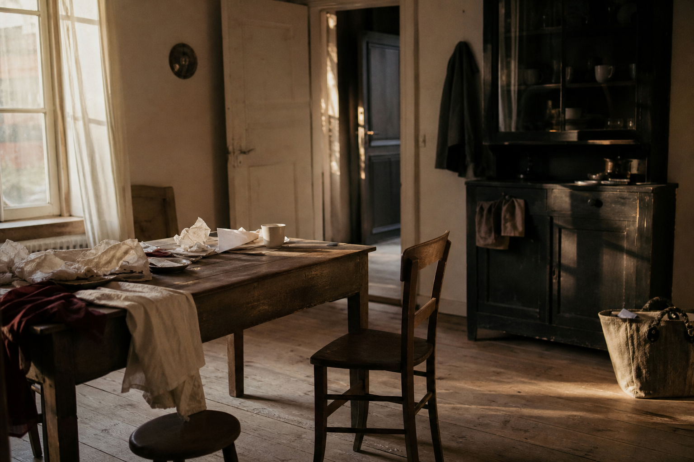
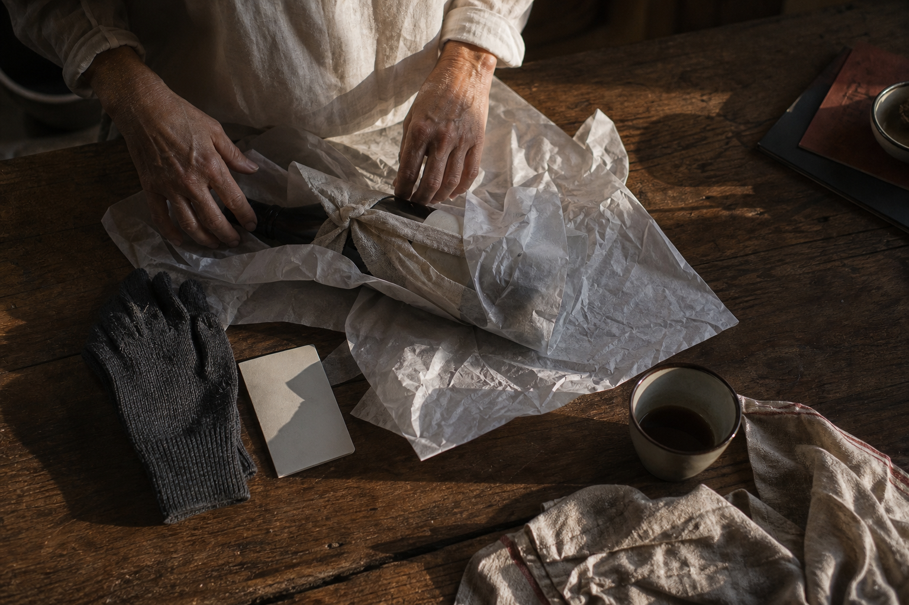
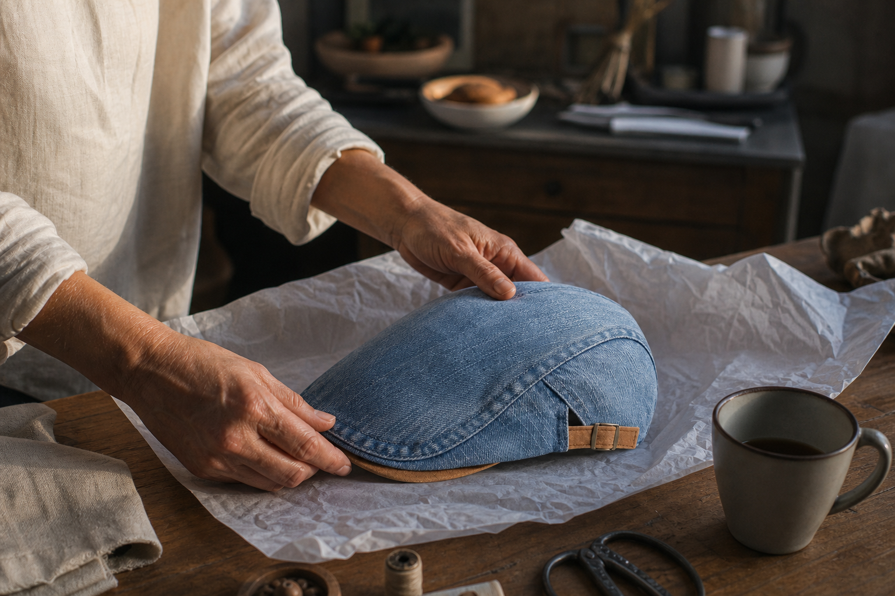
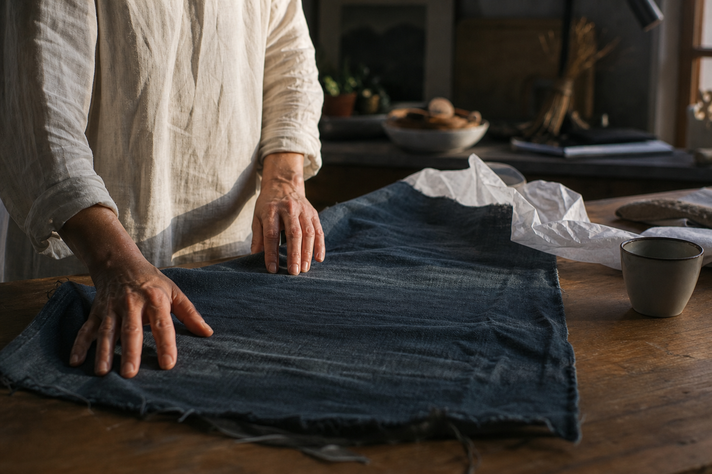
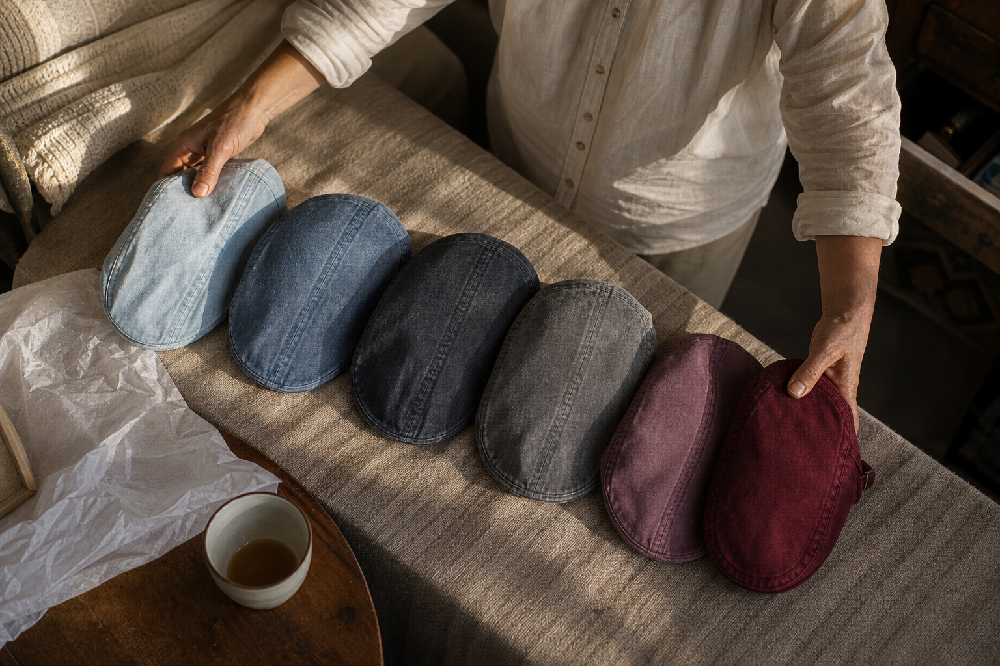
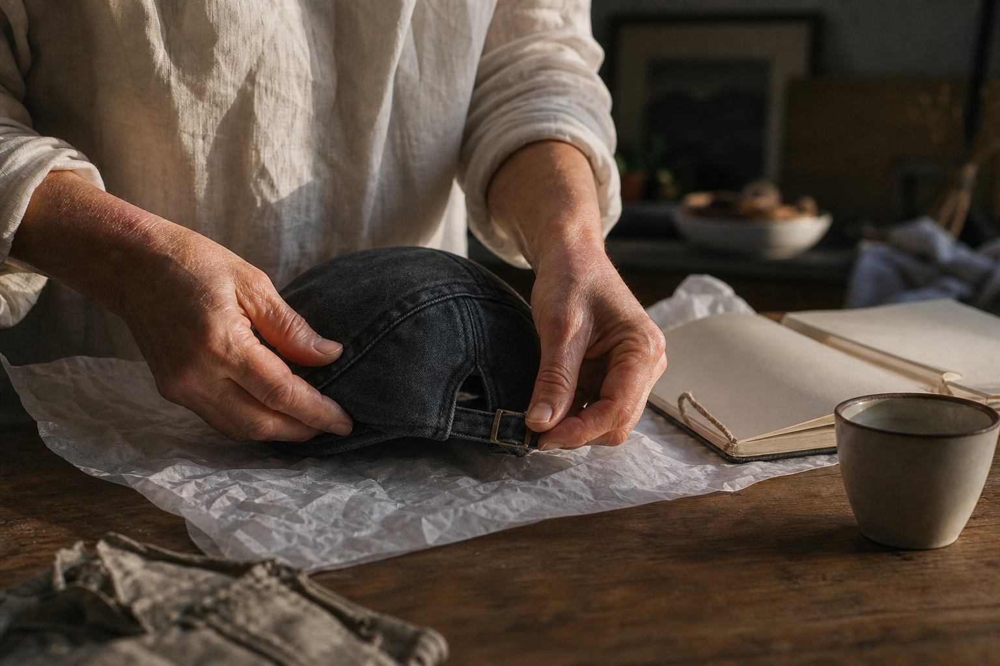

He wears navy and grey
The everyday light blue. The Ashcroft, The Mariner, The Cotswold Denim.
A letter to the woman with the tape measure
A Tuesday evening, the lamp on, the tape measure in your hand and nobody's head to put it around.
You'd already found it. You'd already pictured him in it. Then you got to the size, and you realised you'd be guessing at a number you couldn't check without asking him why.
So you folded the tape measure back up. You bought the safe thing instead. And you've been slightly annoyed about it ever since.
This page is written to you, not to him. It answers the thing you got stuck on, in order: the number, the rule when you're between two, and what happens if it still isn't right.
It also tells you what I won't promise. That part comes before the ordering, not after.
The measurement is two sections down. Nothing to order yet.

What you tried instead
Every safe gift you've given him had one thing in common: no size to guess.
The voucher, so he could choose himself. The gloves, because one size covers most hands. The bottle, again, because a bottle can't be the wrong size.
None of those were what you wanted to give him. They were what you could give him without a number you didn't have.
That's the cost of playing it safe: you don't hand over the thing you actually pictured. You hand over the thing that couldn't come back to you.

The last way out
And even if you did ask, he wouldn't know.
That was the last option left, wasn't it. Not a voucher, not a guess. Just ask him.
But the question only exists in one context, and he knows it. Ask a man his head size in November and you've handed him the surprise, wrapping paper and all.
And suppose you did ask. He'd shrug. Almost no man on your list has ever put a tape measure just above his own ears. He knows his shoe size and his collar. Not this.
So the one road you hadn't tried is closed too. Which leaves the number to you.
The measurement
You don't need his size. You need a number, and you can take it yourself.
A tailor's tape measure, laid flat around the head, just above the ears and across the middle of the forehead. Don't pull it tight. Take it twice.
That's it. That's the whole thing standing between you and the gift you already decided against once.
Write the number down. Don't try to remember it, and don't convert it into anything yet. What it means, and what to do if the two readings disagree, comes next.
One head, one number, one cap cut to it. Not a size guessed from a bin of thousands.
Read the tape, write the number on the back of your list, and find it below. That's the whole step.
If you land between two bands — 55 and a bit, 57 and a half — take the smaller of the two. The denim gives slightly with wear; it never goes the other way. And the side-adjuster takes up the slack a tape measure can't resolve.
Thick hair counts. Measure over it, as he wears it, not flattened down with your palm. The number you want is the one his head actually presents on a Tuesday morning.
A cap made by the thousand asks you to guess. This one asks you for one number, measured once, at your kitchen table.
The thing you'd be wrapping
You measured a head you couldn't ask about. Here's the cap that was built for exactly that.
The shell is soft. It follows the skull instead of gripping it, and it sits low, the way every Ashcroft flat cap is cut. Tan suede trim along the edge.
Then the side-adjuster: he sets it once, the first evening, and it stays put. That's the part your tape measure couldn't resolve on its own — the millimetres between your number and his actual head. He closes them himself, without you ever asking.
One cut, made to fit. Not four sizes guessed at, then hoped over.
100-Day Fit Guarantee: it sits right, or your money back.

Why the number holds
You measure a head in December. He wears the cap in March. Nothing in between should move.
That's the part you can't verify at the kitchen table, so let me tell you how it's built.
The cloth is washed before it's cut. The shrink happens at the mill, not on his head, so the number you wrote down is still the number after the first domestic wash. Raw denim does the opposite: stiff, then smaller, then loose. Panels assembled with a sewn lining, not a glued one, which is what blisters on the forehead when cheap caps meet heat. The peak comes out of the same shell.
One condition, said now rather than after: hand wash, cold water, no tumble dryer. A dryer will distort the shell, and that one I can't take back.
The number you wrote down still applies in spring.

Choosing the wash
You don't need to know his taste. You need to know what's already in his wardrobe.
Open his coat cupboard and look at what he reaches for. That's the whole method.
If it's navy, grey, anything he'd call sensible, take the everyday light blue: The Ashcroft Denim, The Mariner Denim, The Cotswold Denim. It sits with what he already owns and he won't have to think about it.
If he wears one thing with colour in it, The Claret Denim is the burgundy that isn't afraid of colour. The Blackthorn, The Sherwood, The Admiral, The Onyx go darker. Every one carries the tan suede trim.
What I won't tell you is which one he'd have chosen himself. The collection keeps growing, and the wash you pick today is the wash he unwraps.
The everyday light blue. The Ashcroft, The Mariner, The Cotswold Denim.
The Claret Denim. Burgundy, and unapologetic about it.
The Blackthorn, The Sherwood, The Admiral, The Onyx Denim.

Before you order
Three things I'd rather you read now than discover after the wrapping paper.
You've got the number written down. So let me tell you where that number stops working, before you spend anything.
Above 61 cm, the XL sits tight. It's the top of the band, not a band of its own, and sending you the same size twice helps nobody. Write to help@ashcroft-flatcaps.com before you order and we'll tell you straight.
Shipping is free, but France métropolitaine is quoted 3 to 6 working days. Order with room. Aim at the low end and every day you wait makes the catch-up longer.
Hand wash, cold water. A tumble dryer will pull the crown out of shape, and that one we can't undo.
The XL will stay snug. Email help@ashcroft-flatcaps.com before ordering rather than after.
3 to 6 working days for France métropolitaine. I won't promise you three.
The shell loses its shape. No wash instruction we give can bring it back.
After it's unwrapped
A cap gets judged on a pavement, not in front of the hallway mirror.
Here's the part you couldn't control from the kitchen table: whether he'd actually like it on. So don't ask him to decide in the hallway. Let him wear it to the car, to the shop, to the end of the road. That's where a flat cap either sits right or doesn't, and he'll know in one walk.
And if the number you wrote down landed on the wrong side of a band, the size exchange is there. You write to help@ashcroft-flatcaps.com, one email, and it's handled. That's the piece I'd rather you knew before you order than after.
One caution: keep it out of the tumble dryer. That's the one thing a swap can't undo.
Order with room before the date, so a swap still has time to happen.
One sentence, from someone who isn't me
It was never the size she was afraid of.
For a long time I read our own survey wrong. Fifty-seven percent of people say size is what stops them buying online. I assumed that meant they were afraid of a cap that wouldn't fit.
Then Hélène wrote to us. Read her last sentence twice. She isn't relieved that it fitted. She's relieved that nothing came back to her — no parcel to repack, no label to print, no errand added to her week because a gift she chose didn't land. Fourteen percent name it outright: the return to handle.
That's what the tape measure is for. That's what the smaller of the two is for. Not to get the size right for him. To keep the size from ever becoming your problem.
I gave it to my husband without knowing his head size. I measured with a tape measure, following the guide, and it landed right. I was expecting to have to handle an exchange. There wasn't one.
Hélène P., 41
Gave it to my husband. He never takes it off. I was worried about the size; the guide was right.
Verified review, 3 March 2026 — ordered L, no return
Two ways to make a cap
You've already decided. This is just the part that lets you stop checking.
A cap made by the thousand asks nothing of you. No number, no band, no side-adjuster. That sounds easier until it arrives: sizes that mean whatever the factory decided that week, a lining glued instead of sewn that lifts at the front, colour that runs the first time it gets wet. Cheap to buy, and the exchange is yours to handle.
What you have instead is a figure written down, one band out of four, and an adjuster you set once. Nothing about it depends on luck.
And here's the part I won't dress up: the gap only widens with waiting. A cap ordered tonight leaves room. A cap ordered late leaves you managing a return in January.
| The Washed Denim Collection | Alternative | |
|---|---|---|
| Sizing | A number you measured, landing in one of four bands, plus a side-adjuster set once | Sizes that mean whatever the maker decided |
| Lining | Sewn in | Glued, and it lifts at the forehead |
| Colour | Washed denim, from everyday light blue to burgundy | Unstable dye that runs |
| If it's wrong | 100-Day Fit Guarantee: it sits right, or your money back | Your problem, in your name |

The net under the decision
You wrote the number down. This is what happens if the number was wrong anyway.
You've done the part that felt like a gamble: the tape measure, the band, the wash. Here is the part you don't have to do alone.
A hundred days. It sits right, or your money back. Not a credit, not a swap you have to argue for: a 100-day money-back guarantee on a cap you bought for a head you never measured out loud.
Shipping is free, on every order, worldwide, no minimum. And someone answers 24/7 — the eleven-at-night hour, when you're doing the arithmetic between the order date and the date on the wrapping paper. That's the only window the guarantee doesn't stretch: the calendar in front of it.
100-Day Fit Guarantee. Free worldwide shipping.
Still on your list at eleven at night
You've decided. These are the practical bits left, and none of them need a reply from me at midnight.
One I can't answer for you: how to get the tape measure round his head without telling him why. I don't document that. Women who buy for the man on their list find their own moment, and I'd rather admit it than invent a trick.
The rest is written down below.
I don't have a method for that, and I won't pretend otherwise. What I can tell you: it takes ninety seconds, just above the ears, and the number is all you need from him.
Metropolitan France is 3 to 6 working days. Order with room, not against the low end of that range. Every day you wait shortens the margin, and if a size exchange is needed, the catch-up runs longer than the wait did.
Slip it in with the wrapping paper: by hand, cold water, never a tumble dryer. The cloth was washed on the piece before it was cut, so the size holds through a proper wash. A dryer is the one thing that undoes it.
Write to help@ashcroft-flatcaps.com before you order. Past 61 cm the XL sits tight, and I'd rather say so now than send you a parcel you have to handle twice.
Ordering
The number is written down. The band is picked. Only the calendar is still moving.
You have everything except time. France métropolitaine is quoted at 3 to 6 working days, and I won't promise you the low end of that. Order with room, not on the edge of it.
That margin is the only thing you're spending by waiting. Order today and a size exchange still has somewhere to fit before the date. Order the night before you need it and there's nothing left to absorb it.
One cap, cut to the measurement you took at the kitchen table. Free worldwide shipping, and if it doesn't sit right, your money back within 100 days.
$29.99 instead of $59.98 - free worldwide shipping, 100-Day Fit Guarantee